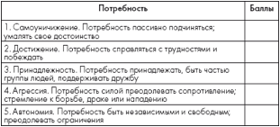

Нарушения мышления у больного шизофренией и семья. В истории изучения шизофрении всегда отмечался повышенный интерес к особенностям познавательных и прежде всего мыслительных процессов у лиц, больных шизофренией. При шизофрении имеют место нарушения ассоциативных процессов, способности к логическому мышлению, понятийного мышления, актуализации сведений из памяти [Выготский Л. С, 1932; Зейгарник Б. В., 1958; Поляков Ю. Ф., 1972; Скобцова А. Л., 1976]. Социально-психологические исследования показывают огромную роль семьи в формировании и развитии мышления у ребенка. Основную роль при этом играет общение с ребенком родителей. Они направляют формирование мыслительных навыков, демонстрируют, общаясь с ним, правильное мышление. В общении с родителями ребенок учится использовать свое мышление для освоения окружающей действительности, решения разнообразных проблем. Понятно, что исследователи стремились выявить влияние семьи больного шизофренией на возникновение и развитие мыслительных процессов, в частности ее роль в появлении нарушений мышления, характерных для шизофрении. Проведенные за последние десятилетия исследования показали, что условия жизнедеятельности такой семьи затрудняют формирование у ребенка особенностей мышления, характерных для здоровых, и, напротив, способствуют нарушениям, которые характерны для больных. Противоречивы коммуникационные отношения родителей с ребенком. Речь идет прежде всего об интеллектуальной противоречивости — чаще всего о требовании родителей к ребенку, которое противоречиво и потому невыполнимо в действительности, но эта противоречивость оформлена так, что не опознается ребенком. Такое отношение получило название «двойной связи» [Bateson J., 1956].
Автор гипотезы «двойной связи» указывает, что эта связь наиболее сильна при наличии дополнительного условия. Отношения в семье построены так, что у ребенка нет возможности уклониться от разрешения указанного противоречия. В работе приводится значительное число клинических наблюдений подобных явлений в семьях больных шизофренией. Один из типичных случаев — взаимоисключение содержания того, что говорит родитель, с тоном, мимикой (например, выражения любви ледяным тоном). Родитель больного шизофренией нередко упрекает его в холодности и одновременно в неумении сдерживать проявления .своих чувств [Bateson J., 1956]. Ребенок в этих условиях постоянно чувствует себя сбитым с толку, не обнаруживает логики, закономерности. Развитие мышления при этом затруднено.
Нарушениям мышления, характерным для шизофрении, способствует и нелогичность, парадоксальность взаимоотношений в семье. Семья — это тот участок действительности, в котором ребенок должен разобраться в первую очередь. От него требуется понять взаимоотношения в семье, требования друг к другу членов семьи и на этой основе строить свое собственное поведение. Семьи лиц, больных шизофренией, однако, тем и отличаются, что в их поведении нет ясной, доступной пониманию ребенка логики. Важное явление, отмеченное другим видным исследователем L. Wynne (1958), — это характерные для этих семей «псевдоотношения», а именно «псевдовзаимность» и «псевдовражда». Для «псевдоотношений» характерно противоречие между провозглашаемыми ролевыми требованиями и тем, какое поведение в ответ на эти требования в действительности ожидается. В результате складывается ситуация, когда средства, обычно используемые семьей для того, чтобы помогать ее членам строить свое поведение в соответствии с требованиями семьи (вербальные указания, санкции и др.), в семье больного шизофренией вводят его в заблуждение, затрудняют «улавливание» последовательности семейных взаимоотношений. Алогичность, противоречивость действительности, с которой сталкивается ребенок в своей семье, становится тормозом в развитии его мышления, которое только и может развиваться на познании закономерностей действительности и использовании этих знаний для ее освоения. Другой источник «алогичности» семейных отношений в семьях больных шизофренией описан известным английским исследователем R. Laing (1965). Он назвал его «мистификацией» в семейных взаимоотношениях. Для взаимоотношений в таких семьях характерно то, что члены их вводят друг друга в заблуждение относительно мотивов своих и чужих поступков. Мать говорит мешающему ей своей веселой игрой ребенку: «Ты уже устал и хочешь идти спать». По R. Laing, это пример «мистифицирующего» высказывания. Мать «вытесняет» собственный эмоциональный опыт ребенка, заменяя его своим мистифицирующим. «Мистификация» встречается в той или иной мере в любой семье, но она особенно выражена как раз в семьях больных шизофренией.
На объяснение нарушений мыслительных процессов при шизофрении в значительной мере нацелены исследования представителей миланской школы М. Pallazolli (1978). Усилия их направлены на изучение явления, которое они обозначают термином «парадоксальная игра». Структура взаимоотношений в семье больных шизофренией во многом аналогична игре, правила которой таковы,- что обе стороны очень заинтересованы в выигрыше, но ни одна в действительности не может выиграть. На эту абсурдную ситуацию члены семьи реагируют абсурдными действиями. Их закрепление в качестве навыка мышления, восприятия, поведения в значительной мере содействует нарушениям мышления. Длительная семейная психотерапия, получившая название «контрпарадокса», приводит к положительным результатам (Э.Г. Эйдемиллер, В. Юстицкис «Психология и психотерапия семьи»).
На нем все эго‑состояния контаминированы, включая Родителя, проникающего в Ребенка. Такая ситуация наблюдается у шизофреников, когда Ребенку пациента кажется, что родительский голос звучит у него в голове и что отец и на самом деле гоняет шары на соседней дорожке, повторяя: «Ты, парень, с причудами». Одновременно с этим пациент может слышать и психиатра, говорящего: «Голос вашего отца — это галлюцинация, ведь как ни крути, а он мертв», — и продолжать, как ни в чем ни бывало, запускать шары в кегли. На этой стадии он действует еще не с позиции Взрослого, а с позиции недавно встроенного Родителя (психиатра).

Контаминация всех эго‑состояний
Не будь нормальным. Если безумное поведение вознаграждается или если оно моделируется, но не корректируется, то само моделирование становится сообщением «Не будь нормальным». Мы видели много детей шизофреников, у которых были трудности в разграничении реального мира и его восприятия, хотя сами они не были психотиками. Они вели себя как безумные и часто лечились от несуществующих психозов (Р. и М. Гулдинг «Психотерапия Нового решения»). Приказание «Не будь здоровым» часто передается ребенку родителем или родственником, страдающим каким-то психическим расстройством. В этом случае ребенку оказывают внимание лишь тогда, когда он ведет себя как сумасшедший.
В некоторых семьях послание «Не чувствуй» означает «Не испытывай физических (телесных) ощущений». Это приказание дается в раннем детстве и, если оно достаточно сильно, то может стать причиной серьезных проблем во взрослой жизни. Например, у ребенка, получившего приказание не испытывать голод, могут развиться болезни, связанные с пищеварением. По мнению ряда терапевтов ТА, послание «Не испытывай физических ощущений» лежит в основе некоторых психозов.
Существуют два вида трансакций — тангенциальная (отклоняющаяся) и блокирующая, — которые предоставляют вербальное доказательство того, что происходит искажение.
Отклоняющаяся трансакция (соскальзывания) это такая трансакция, в которой стимул и реакция затрагивают различные аспекты или один и тот же аспект с разных точек зрения. Например, на вопрос терапевта: «Как вы себя чувствуете?», член группы отвечает: «Когда мы говорили об этом на занятии вчера, я испытывал гнев». В ответе он говорит не о своем сегодняшнем самочувствии, а о том, как он чувствовал себя вчера.
Блокирующая трансакция (резонёрство). При блокирующей трансакции суть вопроса избегается из-за несогласия с постановкой самого вопроса. Например:
Терапевт: «Как вы себя чувствуете?»
Член группы: «Что вы имеете в виду, эмоциональное состояние или физическое?» (Я. Стюарт, В. Джойнс «Современный транзактный анализ»).
Сумасшествие — это крайнее выражение сценария «Без разума». Неспособность справиться с жизнью, чувство беспомощности — то, что в быту называется отсутствием силы воли, леностью, незнанием того, чего хочешь, легкомыслием, глупостью или сумасшествием, — формируются «благодаря» полученным в детстве запретам мыслить и познавать мир. Взрослые учат ребенка не использовать свою взрослую часть, тем самым закладывая основу для сценария «Без разума»; причем основным их орудием является обесценивающая транзакция, или игнорирование.
Игнорирование сводит людей с ума. Рональд Лэнг хорошо понимал это и дал в своей книге «Узлы» несколько примеров игнорирования и того, как оно действует на человеческий разум.
Джилл. Я боюсь.
Джек. Не бойся.
Этот диалог — пример игнорирования. Игнорирование сбивает человека с толку. Лэнг продолжает.
Джилл. Я боюсь испугаться, когда ты говоришь мне, чтобы я не боялась.
Боюсь.
Боюсь испугаться.
Не бояться испугаться.
Не боюсь.
Боюсь не испугаться.
Не боюсь не испугаться.
Люди, которые постоянно терпят и принимают игнорирование, действительно могут сойти с ума и «демонстрируют» симптомы заболевания паранойей и неадекватные чувства. Безумие — это крайнее проявление сценария «Без ума». Ложь и тайны — мощное орудие формирования сценария «Сумасшествие», а ложь в сочетании с игнорированием приводит к психическому расстройству, которое называется шизофренией, но которое я предпочитаю называть безумием.
Шизофрения — не болезнь, это всего лишь оскорбительное название, которое «специалисты в области душевного здоровья» используют, имея в виду слабых мира сего. Получить диагноз «шизофрения» — все равно что получить табличку, которую вешают на шею человека, чтобы все знали, кто он такой, и не подходили близко. Для молодых людей, которых отводят к психиатру, чтобы он поставил им диагноз, — это последний, самый сильный удар судьбы. Ярлык «больной шизофренией» заставляет человека думать о себе как о шизофренике, а других — вести себя с ним как с шизофреником, например положить в больницу, и, скорее всего, надолго, в результате чего жертва совместных действий семьи и психиатров становится окончательно безумной и безнадежной.
На мой взгляд, то, что психиатры называют «параноидной формой шизофрении», — это состояние души, которое является результатом систематической лжи и подавления в детстве и во взрослой жизни пациента. Здесь, хотя и пользуясь психиатрическим жаргоном (о котором я умолчу), Кэмерон называет важнейший факт, касающийся паранойи, а именно (скажу своими словами): паранойя — это состояние обостренной чувствительности (К. Штайнер «Сценарии жизни людей»).
Основным понятием, используемым при объяснении того, что называется шизофреническим экзистенциальным паттерном, оказывается понятие нарушения согласованности естественного опыта, его несогласованность. Несогласованность подразумевает именно эту неспособность «позволить вещам быть» при непосредственной встрече с ними, другими словами, неспособность безмятежно пребывать среди вещей.
Жизнь наших пациентов такой мукой делает то, что они неспособны примириться с несогласованностью и беспорядком своего существования и, вместо этого, постоянно ищут выход, так чтобы порядок мог быть восстановлен. Повсюду мы встречаем это неутолимое желание восстановить нарушенный порядок, заполнить бреши в опыте все новыми идеями, занятиями, делами, развлечениями, обязанностями и идеалами — словом, страстное желание «мира и гармонии» и «дома» (Эллен Вест) или даже «смерти как единственного счастья в жизни» (Эллен Вест), стремление к Нирване (Юрг Цюнд) в смысле финального ad acta отказа от вещей и, в «бесспорно финальном усилии», отказа от своего «я» Это страстное желание «конца» возникает из-за того, что нет выхода из существования и несогласованности опыта, которая сопровождает его. «Сравнение со сценой» Эллен Вест — это особенно драматическое и трагическое отражение этого состояния безвыходности. Но до того, как покажется этот конец, будет ли это самоубийство, уход из активной жизни или сумасшествие, мы видим, что Dasein фактически изводит самое себя в поисках все новых путей выхода, путей, которые не могут быть действенными вследствие особой жизненной ситуации пациента. Последний выход проявляется без исключения в формировании Экстравагантных [verstiegene] идеалов, которые маскируются под жизненную позицию, и в безнадежном усилии следовать и отстаивать эти идеалы
Даже во время акта сожжения руки поведением Ильзе уже управлял определенный набор альтернатив — альтернатив либо силы, победы и избавления, либо поражения и бессилия. Мы, таким образом, приходим ко второму конституирующему понятию нашего исследования: расщепление согласованности опыта на альтернативы, на жесткое или-или. Этот фактор имеет огромное значение для понимания хода, принимаемого той формой существования, которая обозначается как шизофрения. Несогласованность опыта теперь подвергается очевидно новому упорядочиванию, среди беспорядка опытной несогласованности происходит очевидное занятие позиции. Мы, таким образом, возвращаемся к тому, что мы стали опознавать у всех наших пациентов как формирование Экстравагантных идеалов. Dasein теперь ставит все на «сохранение» этой позиции, на — другими словами — следование этому идеалу до конца. Идеал является Экстравагантным, потому что он совершенно не соответствует всей жизненной ситуации и, следовательно, не представляет собой подлинное средство. Наоборот, он воздвигает непреодолимую и непроходимую стену на пути существования. Dasein больше не может найти путь назад из этой Экстравагантности и вместо этого все больше и больше запутывается в ней. Результат этого еще более катастрофический, т. к. формирование Экстравагантных идеалов представляет собой только одну сторону альтернативы, тогда как другая охватывает все, что противоречит этому идеалу.
Утрата опоры на Экстравагантный идеал означает, что Dasein становится тревожным — тревога по поводу преследования (бред преследования). Вместо свободно развертывающегося опыта мы находим — во всех наших случаях — «лишение свободы», или «кабалу», в «сетях», или «путах», жесткой альтернативы (Эллен Вест).
Дополнительным конституирующим понятием для наших исследований было понятие прикрытия. Под этим мы подразумеваем сизифоподобное усилие скрыть ту сторону альтернативы, которая невыносима для Dasein, так чтобы Экстравагантный идеал мог быть таким образом подкреплен. Юрг Цюнд — классический пример этого, и его случай дает нам точку зрения, с которой можно понять манерность, а также, до определенной степени, художественный маньеризм6. Чем был для Юрга Цюнда покров элегантных манер (которые превратились в застывшую манерность), тем постоянные усилия оставаться худой и слабительные средства были для Эллен Вест, прикрывание тревоги и поддержание идеала спрятанности посредством слогового оракула и его «решения» были для Лолы Фосс, и скрывание ужасов тревоги посредством ипохондрически подавляющей заботы о благоденствии ее семьи было для Сюзанн Урбан.
В этом отношении мы воспользовались дополнительным понятием: понятием истирания существования (как бы посредством трения), кульминации антиномических напряжений, вызванных неспособностью более найти выход или вход, кульминации, которая является отказом или отречением от всей антиномической проблемы как таковой и которая принимает форму экзистенциального ухода (уход из жизни; уход из активной жизни; отказ от жизни как автономной самости; отказ от своей способности выбирать перед решениями врагов; уход в душевную болезнь) (Л. Бинсвангер «Введение в шизофрению»).
Если индивидуум не может принять как само собой разумеющееся реальность, жизненность, автономию и индивидуальность самого себя и других, ему приходится измышлять собственные способы быть реальным, удерживая себя и других в живых, сохраняя свою индивидуальность, прилагая все усилия, как он часто будет это выражать, чтобы не дать себе потерять свое «я». То, что для большинства людей является обыденными происшествиями, которые едва ли замечаются по причине их незначительности, может стать глубоко значимым, поскольку оно либо поддерживает бытие индивидуума, либо угрожает ему небытием. Подобный индивидуум, для которого элементы мира приобретают или уже приобрели иную иерархию значимости, чем у обычной личности, начинает, как мы скажем, «жить в своем собственном мире» или уже живет там. Однако неверно сказать, без осторожных оговорок, что он теряет «контакт с» реальностью и уходит в себя. Внешние события уже не задевают его так же, как других: но это не означает, что они задевают его меньше; наоборот, зачастую они задевают его намного сильнее. Как правило, суть вовсе не в том, что он становится «безразличным» и «ушедшим в себя». Однако, может быть, мир его переживания становится миром, который он уже не может делить с остальными людьми.
Но до изучения такой эволюции будет весьма ценно охарактеризовать под тремя заголовками три формы тревоги, которые свойственны онтологически неуверенной личности; поглощение, рызрывание и окаменение.
Поглощение ощущается как риск быть понятым (то есть постигнутым, настигнутым, схваченным), быть любимым или даже просто быть увиденным. Ненависть к себе может страшить по другим причинам, но ненависть, как таковая, зачастую волнует меньше, чем уничтожение посредством поглощения любовью. Основным маневром, используемым для сохранения индивидуальности под давлением страха поглощения, является изолирование. Таким образом, вместо полюсов отделенности и связанности, основанных на индивидуальной автономии, существует антитеза между полной потерей бытия посредством захвата другой личностью (поглощением) и полным одиночеством (изоляцией). Не существует третьей, безопасной возможности диалектических взаимоотношений между двумя личностями, уверенными в собственной основательности и на базе этого способными «потерять себя» друг в друге. Подобное слияние бытия может произойти «подлинным» образом лишь тогда, когда индивидуумы уверены в себе. Если человек ненавидит самого себя, он может желать потеряться в другом: тогда поглощение другим является бегством от себя. В настоящем же случае это вездесущая возможность быть напуганным. Быть верно понятым — значит быть поглощенным, заключенным, проглоченным, утопленным, съеденным, задушенным предполагаемым всеохватывающим постижением другой личностью. Одиноко и болезненно вечно пониматься неправильно, но по крайней мере с этой точки зрения в изоляции есть некая безопасность. Существует множество образов, используемых для описания того, что угрожает индивидуальности, которые можно здесь упомянуть как близко связанные со страхом поглощения, например страх быть сожженным, утопленным и затянутым зыбучими песками. Постоянно повторяется образ огня. Огонь может оказаться неуверенным мерцанием собственной внутренней жизнеспособности индивидуума. И он может стать чуждой разрушительной силой, которая его уничтожит. Некоторые душевнобольные при обострениях говорят, что они все в огне, что их тело сгорает. Один пациент описывает себя как холодного и сухого. Однако он боится любого тепла и любой влаги. Он будет поглощен огнем или водой и во всяком случае погибнет.
Это самое сильное слово, которое я смог найти для крайней формы того, что Уинникотт определяет как столкновение с реальностью. Слово «столкновение», однако, не выражает всего ужаса переживания мира, который в любой момент может вторгнуться и уничтожить любую индивидуальность точно так же, как газ врывается и уничтожает вакуум. Индивидуум ощущает, что, как и вакуум, он совершенно пуст. Но такая пустота есть именно он. Хотя в других случаях он стремится к тому, чтобы эта пустота заполнилась, он боится, что это, возможно, произойдет, поскольку он стал чувствовать, что все, чем он может быть, это жуткое ничто этого самого вакуума. Тогда любой «контакт» с реальностью переживается как страшная угроза, поскольку реальность, переживаемая с такой позиции, обязательно взрывоопасна и, как связь при поглощении, является сама по себе угрозой той индивидуальности, которой предположительно способен обладать индивидуум. Реальность, как таковая, угрожающая поглощением или разрыванием, является преследователем.
При использовании термина «окаменение» можно извлечь большое количество смыслов, содержащихся в этом слове:
Невоплощенное «я». При таком положении индивидуум переживает свое «я» как более или менее отделенное или отстраненное от тела. Тело ощущается скорее как объект среди других объектов в этом мире, а не как ядро собственного бытия индивидуума. Вместо того чтобы быть ядром истинного «я», тело ощущается как ядро ложного «я», на которое отстраненное, развоплощенное, «внутреннее», истинное «я» взирает с нежностью, изумлением или ненавистью в зависимости от случая. Подобное отделение «я» от тела препятствует прямому участию невоплощенного «я» в любом аспекте жизни этого мира, который опосредован исключительно благодаря телесному восприятию, чувствам и действиям (средствам выразительности, жестам, словам, поступкам и т. п.). Невоплощенное «я», являющееся сторонним наблюдателем всего, что делает тело, ни во что прямо не вовлекается. Его функциями становятся наблюдение, контроль и критика того, что тело переживает и делает, и об этих операциях обычно говорят как о чисто «ментальных».
Некоторые люди умышленно, некоторые неумышленно входили или были брошены более или менее полно во внутреннее пространство и время. Мы же в соответствии с социальной обусловленностью полностью погружены во внешнее пространство и время как нормальное и здоровое. Погружение во внутреннее пространство и время рассматривается как антиобщественное бегство, патологическое само по себе, необоснованное и в некотором смысле позорное.
Порой, после того как человек прошел сквозь зеркало, сквозь игольное ушко, эта территория признается потерянным домом, но большинство людей находятся во внутреннем пространстве и времени как на незнакомой территории, они -в испуге и смятении. Они потерялись. Они забыли, что бывали там раньше. Они хватаются за химеры. Они пытаются сохранить манеру поведения, скрывая свое смятение, посредством проекции (наложения внутреннего на внешнее) и интроекции (введения внешних категорий во внутреннее). Они не понимают, что происходит, и, похоже, никто их не просветит.
Мы неистово защищаемся даже от всех переживаний нашего ограниченного эго. Между тем насколько сильнее должны мы переживать страх, смятение и «защиты» в ответ на угрозу потери эго. Нет ничего существенно патологического в переживании потери эго, но, возможно, очень трудно найти живой контекст для такого путешествия.
Это путешествие переживается как движение дальше «внутрь», как возвращение назад через личностную жизнь — внутрь и назад, через и за — в переживание всего человечества, первого человека, Адама и, вероятно, даже еще дальше — в бытие животных, растений и минералов.
Во время этого путешествия имеется множество возможностей для потери пути, смятения, частичной неудачи, даже для окончательного крушения: много ужасов, духов, демонов, с которыми встретишься и которых то ли одолеешь, то ли нет.
Вместо церемонии деградации психиатрического обследования, диагностирования и прогнозирования нам нужно подготовить для тех, кто к этому готов (согласно психиатрической терминологии, для тех, у кого вот-вот будет шизофренический срыв), церемонию инициации, через которую личность пройдет при полном общественном одобрении, погрузится во внутреннее пространство и время и вернется назад с помощью тех, кто там уже был. Говоря с психиатрической точки зрения, это бы явилось помощью бывших пациентов пациентам будущим по схождению с ума. Вот что тогда последует:
а затем последовательно обратное путешествие:
Когда человек сходит с ума, наблюдается значительное перемещение его положения по отношению ко всем областям бытия. Центр его переживания передвигается от эго к «я». Земное время становится чисто эпизодическим, существенно только вечное. Однако сумасшедший находится в смятении. Он путает это с «я», внутреннее с внешним, естественное со сверхъестественным. Тем не менее для нас он может быть, даже посредством своего явного крушения и распада, проявлением священного. Он изгнан со сцены бытия, он — чужак, посторонний, подающий нам сигналы из пустоты, в которой он тонет, — некой пустоты, которая может быть населена существами, о которых мы даже не мечтаем. Их обычно называют демонами и духами, и они были некогда известны и названы. Он потерял свое ощущение «я», свои чувства, свое место в мире, каким мы тот знаем. Он говорит нам, что он -мертв. И мы отвлечены от нашей уютной безопасности этим безумным призраком, который преследует нас своими видениями и голосами, кажущимися такими бессмысленными, и от которых, по нашим ощущениям, мы вынуждены его избавить, очистить, излечить.
Сумасшествие — не обязательно разрыв. Оно может стать также и прорывом. Потенциально это освобождение и обновление, но также порабощение и экзистенциальная смерть (Р. Лэнг «Расколотое Я»).
В шизофрении глубина резкости восприятия направлена за сцену повседневной жизни. Шизофреник не смотрит на качество и полезность вещей, а смотрит на их данность. Его интересует фактичность их наличия, и он хочет их соединить друг с другом и знать, что их удерживает вместе. В экзистенциальном плане — более или менее осознанно — он занят философским вопросом, на чем основано «Бытие». Когда возникает такая глубина резкости, которая направлена на «Принципиальное», все происходящее в повседневности утрачивает свою резкость и становится расплывчатым, в то время как, с другой стороны, взгляд, направленный в темноту за сценой, не может уже охватить предметы в их обыденности. Он попадает в пустоту, учреждает «Ничто» среди «Бытия», на которое он непрерывно смотрит и от которого он не может оторвать свой магически прикованный взгляд. Это отбрасывает обратно к нему самому вопрос «Бытия». Что бы он ни переживал, это ставит шизофреника перед вопросом: где я есть? Вопрос возникает неоднократно и имеет несколько значений: Где мое Я? Я еще есть? Где мне себя найти? Что может быть тем местом, где я могу найтись? Переживание сопровождается пронизывающим все страхом, которому шизофреник больше уже ничего не может противопоставить: он сам весь есть страх, потому что больше нет внешнего или внутреннего места, где он мог бы от него укрыться. «Бытие здесь» при отсутствии места — это «Бытие, которого нет нигде». То, на чем основана экзистенция — «Здесь», данность, визави, место, которое несет, на котором стоишь (локально, во времени, био-фафически) — растворяется. «Бытие здесь» выпадает из структуры. Это так, словно удерживающие вместе мир и Я внутримолекулярные силы и структуры прекращают существовать. Все утрачивает свою прочность. Из-за этого утрачивается опыт связанности экзистенциальных основ. Мышление, мир, телесное переживание, чувства, вероятно, еше имеют взаимосвязи в себе и между собой и принимают произвольный характер, даже если они уже не понятны больному шизофренией. Решающее переживание этого растворения «сцепленной» когерентности — это только свободные и произвольные взаимосвязи, это то обстоятельство, что таким образом исчезает прочность переживаемой действительности. Закономерность пещей, а также и собственного «Бытия», растворяется. Может быть, еще и обнаруживаются какие-то взаимосвязи, но удерживаемость их вместе утрачена — «Бытие здесь» построено ни на чем.
Шизофренический процесс переживания ведет к утрате внутренней и внешней действительности — к выпадению из «Бытия» в бездонное «Ничто». Это отличает его от невротического переживания, которое, при взгляде на бездонность «Бытия здесь», все-таки предполагает, что в пропасти имеется дно и, таким образом, не ощущается в аспекте бездонности и отсутствия места. Этот опыт бездонности, в котором больше нет ничего, что могло бы связывать, делает понятной невозмутимость, которая встречается при формировании реакций. Таким образом, бред характеризуется невозмутимой уверенностью, а также и аутизм пронизан непробиваемой защитой от силы воздействия мира через выстраивание внутреннего сцепления. Бездонность ощущаемого «Небытия» делает необходимой эту невозмутимость в ответной реакции как единственную еще возможную связанность в «Бытии здесь».
Утрату эмоционального спонтанного присутствия вещей больной шизофренией пытается компенсировать через когнитивные достижения. Таким образом, пациенты действуют на основании рациональности, у которой больше нет эмоционального базиса. Следствием этого является утрата чувства в отношении того, являются ли они сами теми, кто чего-то хочет или делает, или же речь идет о силе, идущей извне, в распоряжении которой они находятся, и частью которой они не являются. Простые решения для них недоступны. «Нравится мне или не нравится» — этот вопрос ставит их перед загадкой. Они больше не могут ощущать, что им нравится. «Нравится ли мне слушать радио, или отдыхать? — Я этого не ощущаю. У меня все так, словно я это делаю от головы», — описывает пациент свое переживание. В то же время, запросы и «разум» накрыли бы его с головой как навязчивости.
Причиной ранимости переживания и нарушения мышления часто является сила чувств. Связанная с этим потеря ощущения связанности становится непосредственно заметной при шперрунгах (обрывки мысли) и соскальзывании мысли. Когда пациент, страдающий шизофренией, хочет говорить о чем-то, что его эмоционально трогает, у него регулярно возникает расстройство мышления.
До тех пор, пока речь идет о теме, которая эмоционально нагружает, он может говорить, используя только начало предложений, и постоянно минует цель мышления. Когда я через несколько минут сказал, что я предполагаю («Я думал, что Вы ее очень любите, и что теперь бабушка в опасности и не переживет болезнь, поэтому вы хотели об этом говорить, поскольку это вас нагружало»), он быстро ответил: «Да, это именно так. Но мне не нужно было этого говорить». В рефлексии, вновь проходящей бегло (с этого момента), он полагал, что всегда так себя чувствует, когда думает или говорит о чем-то, соотносящемся с чувствами, в которых он не хочет себе признаться. В этом случае он не хотел осознавать, насколько он привязан к бабушке (из-за возможной потери) и насколько он боялся ее потерять. Блокады или шперрунги случаются с ним также, если его неожиданно через запрос или замечание наталкивают на какую-то тему.
Это МОЖНО было бы назвать также ранимостью чувств, которая заключается в нeвoзмoжнoctи защититься от чувств, как это делает здоровый человек (через переработку, через «мочь нести» или защиту и механизмы защиты). Чувства невольно врываются, человек не хочет в них признаваться и они встают между Я и содержанием мышления, что ведет к шперрунгам и к соскальзыванию мышления на запасной путь.
Таким образом, через вхождение чувств распадается связанность мыслей и переживания. Он субъективно переживает происходящее так, как если бы «чувство выключало разум», и это побуждало бы его к пугающим его действиям, чуждым для него и делающим сомнительными чувства, таким образом, он их снова отвергал и боялся.
На уровне симптомов на основании потери чувства связанности развивается известная утрата способностей, сопровождающиеся соответствующими формами реакции. Из их констелляции вытекают формы шизофрении. Они находятся в треугольнике между полюсами ког-ниции, аффективного переживания и моторики. В случае если на болезнь в большей степени влияют когнитивные воздействия, возникают такие картины, как гебефрения. Schizophrenia simplex. Участие аффективного полюса ведет к смешанным картинам, вплоть до шизоаффек-тивного психоза. Если в большей степени включена моторика, то возникает картина кататонии и других негативных симптомов (А. Лэнгле «Психопатология и экзистенциальные темы в шизофрении»).
Сэлс утверждает, что психодинамика шизофренического больного, так же как и невротика, может быть вполне понята, лишь если ее рассматривать как реакцию пациента на неизбежность его смерти. Несомненно, защиты шизофреника более причудливы, принимают более экстремальные формы, являются более повреждающими, чем защиты невротического пациента. Кроме того, ранний жизненный опыт у шизофреника более опустошителен, чем у невротика. Однако экзистенциальная природа человеческой реальности всех нас делает братьями и сестрами. Шизофреника не менее, чем невротика, терзает факт человеческой смертности, хотя их реакции на него неодинаковы по своей разрушительности.
Многие, если не все, шизофренические пациенты неспособны ощутить себя полностью живыми. Эта «печать смерти», несомненно, является результатом глобального подавления всяческого аффекта, но, по мысли Сэлса, она также может быть связана с дополнительной защитной функцией: если пациент «мертв», то он тем самым уже защищен от смерти. Ограниченная смерть лучше, чем реальная: тому, кто уже мертв, не нужно бояться смерти. Но каждый из нас должен встретиться со смертью. Если страх смерти является центром психической динамики шизофреника, то необходимо разрешить загадку, почему этот универсальный страх в данном случае вызывает слом. Сэлс выдвигает несколько причин.
Во-первых, у тех, кто не получил поддерживающего знания о своей личностной целостности и о полноте своего участия в жизни, смерть вызывает значительно большую тревогу. «Личность, — пишет Сэлс, — не в состоянии встретиться с неизбежностью смерти, пока он не пережил полноту жизни, а шизофреник — это тот, кто еще не жил в полной мере».
Вторая причина капитуляции шизофреника перед тревогой смерти — тяжелые утраты, пережитые в столь ранний период развития, когда человек еще не способен был их интегрировать. Вследствие незрелости своего Эго пациент реагирует на потери патологически, главным образом усилением субъективного инфантильного всемогущества, служащего для отрицания потери (тот, кто является целым миром, не может понести потерю). Таким образом, пациент, который не смог интегрировать потери в прошлом, в настоящем не может интегрировать перспективу величайшей из потерь — потери себя и всех, кого он знает. Следовательно, главное прикрытие пациента от смерти — это ощущение всемогущества, ключевой фактор любого шизофренического заболевания.
Третий источник интенсивной тревоги смерти обусловлен характером ранних отношений шизофреника с матерью — симбиотическим единением, из которого он так никогда и не вышел, но, находясь в нем, колеблется между пребыванием в психологическом слиянии и полной отчужденностью. Отношения пациента с матерью, какими они сохранились в его опыте, наводят на мысль о магнитном поле: подойдешь слишком близко — внезапно «всосет», отодвинешься слишком далеко — унесет в ничто. Для своего поддержания симбиотические отношения требуют, чтобы ни одна сторона не ощущала себя независимой целостностью: каждый из партнеров нуждается в другом, дополняющем его до состояния целостности (И. Ялом «Экзистенциальная психотерапия»).
Если тонус мышц снижен — человек не заземлен, чувствует отсутствие опоры под ногами. У него будут трудности в адаптации к внешнему миру, такие люди склонны уходить во внутренний мир. Например, психотическое поведение — проявление крайних случаев незаземленности. Быть заземленным — значит быть в контакте с реальностью, со своими собственными импульсами (Д. Боаделла «Энергия и характер»).
Как земные существа, мы связаны с землей ногами и стонами. Если эта связь живая, мы говорим, что человек заземлен. Тот же термин мы используем для соединения электрического проводника с землей с целью предохранения электрической цепи от перегрузки. В биоэнергетике мы используем этот термин для характеристики связи человеческой личности с почвой и реальностью. Когда мы говорим, что человек хорошо заземлен, или что он крепко сюит на земле, это означает, что человек осознает себя и окружающее. Быть заземленным — значит быть связанным с основными реалиями жизни с телом, сексуальностью, окружающими людьми и т.д. Мы связаны с ними в той же самой степени, что и с землей (А. Лоуэн «Психология тела»).
Семья как терапевт: для возникновения шизофрении и ее течения большую роль играет реакция окружающих на больного. Отношение к выздоровлению или улучшению или реабилитации также тесно связано с реакцией окружения на больного и его симптоматику. Schuetter и соавт. (1979) установили, что минимальные улучшения обнаруживались в группе тех больных с шизофренией, близкие которых были готовы помочь, но относились к заболеванию необъективно. В этой группе были, прежде всего, чрезмерно заботливые родители и супруги. Самый лучший результат наблюдался в группе с отзывчиво-объективным поведением близких. Поразительно, что отвержение больных оказалось менее вредным, чем отзывчиво-необъективное отношение к ним. Позитивная психотерапия считает близких людей существенными носителями терапии. Именно там, где непосредственного терапевтического влияния на больного не оказывается, может быть, как нельзя лучше выполнена терапевтическая задача. Этот метод необходим хотя бы потому, что пациент с шизофренией нуждается в длительном объективном внимании. У терапевта он бывает 1 — 2 раза в неделю, а его близкие проводят рядом с ним ежедневно от 8 до 24 часов. Уже в связи со значительными временными возможностями и более частыми контактами они могут намного интенсивнее влиять терапевтически или патогенно. Именно терапевтические мощности следует использовать при лечении пациента с шизофренией. С близкими больного в процессе пятиэтапного плана лечения проводится:
Это обеспечение более глубокого понимания членами семьи психологических особенностей пациента, усиления семьей своего влияния на него (нахождение «подхода»), мотивационной перестройки, обеспечение помощи социального окружения и организация сотрудничества с медицинскими работниками. Именно от того, в какой мере семье удастся решить эти проблемы, в конечном счете зависит и то, какое влияние оказывает на данную семью заболевание одного из ее членов.
Одна из наиболее распространенных форм работы — это группа, включающая членов семьи больного, в частности родительская группа. Многие авторы указывают на значительный эффект, который дает психотерапевтическая работа с членами семьи пациента. Интересен опыт исследователей, работавших под руководством В. М. Воловика (1983): они создавали смешанные родительские группы, в которые могли включаться также здоровые супруги. Такие группы, условно называвшиеся «родительскими собраниями», включали
Рассмотрим случай семейной психотерапии, которая проводилась с отдельно взятой семьей и без участия самого пациента. Алексей Р., 18 лет. Диагноз; вялотекущая шизофрения, психопатоподобный вариант, синдром нарастающей шизоидации.
Были поставлены следующие задачи, которые должна была разрешить семейная психотерапия:
На совместных занятиях с матерью и отцом выявлялись все точки их соприкосновения, которые в прошлом или сейчас доставляют им удовольствие. Был заключен договор, что они приглашают не реже 2 раз в месяц к себе домой близких друзей, не реже 1 раза в неделю посещают кино, возобновляют вечерние прогулки. Кроме того, на сеансах родители «вспоминали прошлое» — разыгрывали ситуации «встреча», «признание в любви» и т. д. Цель таких заданий — восстановить супружеские отношения. В качестве «сближающей» техники использовались приемы тренировки прогностической эмпатии.
Мать сообщила, что Алексей Р. потребовал размена площади— он хочет переехать в однокомнатную квартиру бабушки, а ей предложить жить с родителями в их
Клиенты, которые в прошлом переживали краткие, острые приступы психоза, могут успешно заключать контракты не становиться психотиками в ответ на будущие стрессы. Мы изучаем с ними их сегодняшние проблемы и альтернативные пути их разрешения, а также ищем, что они могут сделать в будущем, если перед ними встанут те же проблемы, что уже приводили к острым психотическим явлениям. Они могут начать осознавать свои внутренние сигналы опасности и используют их, чтобы напоминать себе о необходимости возврата к лекарствам или какому‑то другому способу предотвращения психоза. Хронические психотики могут контролировать свое поведение, чтобы не попадать в больницу.
Для человека со сценарием «Безумие» целью может стать научиться мыслить, научиться самостоятельно решать свои проблемы, избавиться от приступов безумия, чувствовать контроль над своей жизнью большую часть времени, научиться излагать свое мнение, просить о том, чего хочешь, или избавиться от чувства страха.
Дженни с 18 до 43 лет постоянно возвращалась в больницу, где ее неоднократно лечили шоком. Она присоединилась к двум нашим группам, каждая из которых встречалась раз в неделю. К тому времени прошла всего лишь неделя, как она вышла из больницы, а родственники уже требовали забрать ее обратно. Ее контракт состоял лишь в том, чтобы изменить себя так, чтобы избежать возвращения в больницу. Для успешного выполнения контракта она уволила медсестру, нанятую ее тетей; перестала звонить родственникам, которые, к счастью, жили далеко, и, наконец, сама обратилась в Верховный Суд и добилась изменения условий опеки. В группе она часто вела себя очень агрессивно, доказывая, к примеру, что британцы отравляют водохранилища, или обвиняя остальных членов группы в сумасшествии. Мы противостояли ее психотическим разговорам, говоря «Эй, Дженни, ты снова говоришь, как сумасшедшая» и поглаживая ее, когда она приходила в себя. Постепенно она позволила себе понять, что становится «сумасшедшей» тогда, когда не хочет слышать, как другие члены группы говорят о гневе или сексе. Она дала себе разрешение выходить из группы, когда захочет, чтобы не слышать этих обсуждений. Позже она перестала избегать каких бы то ни было тем, вывела очень проницательные суждения о всех членах групп и достигла определенной степени близости с ними. Через два года она закончила курс терапии и уже 10 лет обходится без стационарного лечения.
Периодически мы используем также технику пяти стульев Штунца, в которой клиент использует пять стульев, чтобы представить Взрослого, свободного и приспособившегося Ребенка, воспитывающего и критического Родителя.
Объяснение. Объяснение нейтрализует игнорирование и заставляет другую сторону отреагировать на чувства, которые объясняются. Объяснению лучше всего учиться в ролевой игре. Человек, который учится прояснять точку зрения собеседника, должен проиграть ситуацию, где игнорирующая сторона всеми силами стремится избежать прямого разговора. Часто в такой игре игнорируемая сторона чувствует себя в тупике с каждым новым игнорированием. В этом случае другие участники должны помочь ему, высказывая предположения о том, что можно сделать, чтобы нейтрализовать конкретное игнорирование.
Джилл. Ты считаешь, что я глупая.
Джек. Нет, я не считаю, что ты глупая.
На этот раз Джилл не захотела принимать игнорирование своего мужа и решила объяснить свои чувства и потребовать, чтобы он ее выслушал.
Джилл. Если ты не считаешь, что я глупая, то почему я чувствую, что ты считаешь меня глупой? Я хочу объяснить тебе. Ты хочешь знать — почему?
Джек. Да.
Джилл. Мне так кажется, потому что ты постоянно перебиваешь меня на полуслове, и потому что ты почти никогда не соглашаешься с моей точкой зрения. Когда я пытаюсь что-то объяснить тебе, ты делаешь снисходительное выражение лица и смотришь сквозь меня. Наконец, ты называешь меня, пусть в шутку или когда сердишься, глупышкой, дурой и тупицей, ты называешь меня так же, когда говоришь со своими друзьями. Поэтому я думаю, что ты считаешь меня глупой. Поэтому мне хотелось бы знать: ты думаешь, что я глупая?
Часто игнорирующая сторона отказывается продолжать обсуждение темы, когда от нее требуют объяснений. Она (сторона) может покинуть помещение, хлопнув дверью; может отказаться разговаривать на предложенную тему; может переменить тему разговора. Игнорирование подкрепляется силовой игрой, с которой надо уметь взаимодействовать.
Главное — оставаться во взрослом эго-состоянии и отказываться от любого дальнейшего сотрудничества с игнорирующей стороной до тех пор, пока она не объяснит свое поведение. Например, предположим, что Джилл попросила объяснений у мужа, когда он задел ее своей критикой ее кулинарных способностей. В ответ на ее просьбу он покинул столовую, хлопнув дверью. Такое одностороннее решение завершить дискуссию называется игрой «Заседание отложено». Позже, когда Джек захочет отправиться в спальню и заняться сексом, Джилл должна поднять вопрос о своих кулинарных способностях, потребовать объяснений и отказываться от близости до тех пор, пока объяснение не будет дано. Несомненно, борьба с игнорированием — эмоционально насыщенная процедура, и игнорируемая сторона нуждается в сильном разрешении и защите со стороны группы и (или) терапевта.
Крайний случай — это необходимость принять во внимание и серьезно рассмотреть мнение клиента, страдающего паранойей.
Если к вам обратилась женщина с «бредом ревности», которой кажется, что ее муж имел половое сношение со всеми ее соседками по дому и что он пытается отравить ее, вам следует сосредоточиться не на том, что является очевидной неправдой в ее словах, а на возможной правде. Нужно понять, почему женщина считает, что ее муж изменяет ей со всеми соседками и хочет ее отравить. В паранойяльных фантазиях всегда есть доля истины, которую нельзя игнорировать. Скорее всего, муж клиентки не изменял ей со всеми женщинами, которые живут поблизости, но с несколькими он флиртует, а к одной из них чувствует сильное влечение! Когда жена ставит его перед фактом, он все отрицает, говоря, что соседка не интересует его. Скорее всего, у него нет желания убивать жену, но он наверняка думает о том, как хорошо было бы с ней развестись или препроводить ее в психиатрическую больницу. Она чувствует это отношение, но, когда она спрашивает его напрямую, он опять же все отрицает. Оба эти действия со стороны мужа, подкрепленные игнорированием, достаточны для того, чтобы заложить основания острой паранойи у его жены, но, если она будет владеть истинной информацией, ее «паранойя» сойдет на нет.
Паранойяльная фантазия — это подозрение, чувство недоверия или уверенность в том, что другой человек плохо к тебе относится, которая обычно является обоснованной. Когда у людей имеются такие мысли относительно друг друга, им бывает крайне трудно открыто общаться и спокойно работать вместе над своими проблемами. Следовательно, этим мыслям необходимо открытое выражение. Правильным ответом на паранойяльную фантазию будет найти в ней зерно истины и объяснить обстоятельства, которые послужили для нее отправной точкой. Отрицание ее истинности только ухудшит положение.
Фред. Джек, у меня для тебя есть паранойяльная фантазия.
Джек. Давай.
Фред. Я думаю, что ты завидуешь мне и даже ненавидишь меня. Я думаю, ты особенно злишься на меня из-за того, что мы хорошо ладим с Мэри.
Джек (тщательно обдумав). Я не ненавижу тебя, но ты меня раздражаешь, и я отчасти ревную тебя. Я ревную, потому что Мэри слушает то, что говоришь ты, и не слушает то, что говорю я.
Фред. Спасибо. Это похоже на правду.
Периодически избавляться от накопленного раздражения и тайных подозрений не только полезно для групповой работы, это просто необходимо делать в начале каждой встречи, если люди собираются эффективно сотрудничать друг с другом.
Люди со сценарием «Безумие» должны избегать визитов к психиатру, особенно если эти визиты не являются полностью добровольным делом. Под добровольностью я имею в виду отсутствие запертых дверей, возможность прийти и уйти, когда захочешь, отсутствие «терапевтических» назначений против воли индивидуума (индивидуальная или групповая терапия, лекарства, электрошок и т. д.).
(путешествие от жизни к смерти и обратно)
Ваш партнер находится в позиции «звезды». Ладони обращены вверх (маленькие дети только так и лежат — они максимально открыты миру, и лишь взрослые «хватаются» за землю). Вы подводите свою ладонь под лежащую кисть партнера и плавно и аккуратно, не спеша, начинаете приподнимать, отрывать ее от пола. Предплечье и плечо при этом лежат на полу. В таком случае вес кисти как бы «стекает» вниз, в землю. Кисть расслабляется, принимает позицию, при которой она как бы опирается на запястье и как результат — тяжелеет. Кисть в результате обретает свой собственный субъективный вес, который явственно отличен от обычного, связанного с напряженным или активным состоянием. Увеличение веса той или иной части тела во время работы с телом — надежный индикатор расслабления данной части.
Расслабив таким образом кисть, можно переходить к предплечью. Аккуратно придерживая кисть, приподнимите предплечье, взяв его за запястье. Вес предплечья как бы «стекает» вниз и через локоть уходит в пол, в землю. Предплечье расслабляется. Используйте плавные сгибательно‑разгибательные и вращательные движения предплечья, стараясь делать фигуры вращения неузнаваемыми для вашего партнера.
Продолжите упражнение. Приподнимите руку за запястье — оторвите локоть от пола и подведите под него свою ладонь. Осуществляйте плавные и аккуратные манипуляции с рукой партнера — рука как бы плавает в воздухе.
Перейдите к ноге. Подведите руку под коленный сгиб и начните плавно и аккуратно поднимать колено вверх. Пятка партнера скользит по полу. В таком случае сохраняется контакт с землей, с опорой (что особенно важно в работе с ногами). Приподнимая колено (при этом ступня отрывается от пола), подведите вашу ладонь под ступню. Ступня обрела опору в вашей ладони.
Осуществляйте аккуратные плавные сгибательно‑разгиба‑тельные и вращательные движения ногой, каждый раз видоизменяя их рисунок.
Перейдите к голове. Сядьте удобнее. Аккуратно приподнимите голову, подведя под нее ваши ладони. Несколько минут просто подержите голову на своих ладонях, обращая внимание на дыхание и ресницы. Приступите к плавным наклонам головы вперед‑назад, вправо‑влево и покачиваниям‑вращениям. Следите за напряжением мышц шеи.
Время, отводимое на выполнение всего цикла, —
Инициация происходит в группах по
Участник ложится на спину в позицию «звезды». Группа располагается вокруг. После включения музыки, но выждав необходимую для первого контакта паузу, группа приступает к работе. Каждый из участников выполняет любое из четырех базовых упражнений и работает с той частью тела или конечностью, с которой ему хочется работать. Смена приемов и частей тела внутри группы — произвольная. При этом участники не договариваются между собой, кто за что отвечает, и не координируют свои действия.
Приблизительно на 10–15‑й минуте инициируемый входит в глубокое измененное (трансовое) состояние. Отмечается похолодание конечностей, существенно увеличивается их вес, меняется характер дыхания.
На 15–20‑й минуте группа осуществляет давление — своеобразный «пресс». Два участника ложатся так, что накрывают тело инициируемого собой.
Оставшиеся
К данному моменту инициируемый, как правило, не воспринимает тяжести лежащих на нем людей.
Участники группы выдерживают эту позицию в течение
(путешествие от внутреннего к внешнему, от Я к Эго)
Встаньте прямо, стопы стоят параллельно на расстоянии около 45 см. Наклонитесь вперед и достаньте кончиками пальцев обеих рук до пола, сгибая колени настолько, насколько это необходимо. Основной вес тела — на подушечках стоп, а не на ладонях или пятках. Дотрагиваясь до пола пальцами рук, постепенно выпрямите колени, но не блокируйте их, останьтесь в этой позиции в течение 25 дыхательных циклов. Дышите свободно и глубоко. Вероятно, вы почувствуете, что ваши ноги начнут дрожать, это значит, что через них начинают проходить волны возбуждения.
Если дрожание не возникает, значит ноги слишком напряжены. В этом случае можно спровоцировать дрожание, постепенно сгибая и выпрямляя ноги. Эти движения должны быть минимальными, их цель — расслабление коленных суставов. Упражнение должно выполняться в течение не менее 25 дыхательных циклов, или пока не возникнет дрожание в ногах. Вы можете заметить, что ваше дыхание становится глубже и спонтаннее. Вернувшись в позицию стоя, сохраните колени немножко согнутыми, стопы параллельными, а центр тяжести — смещенным вперед. Ваши ноги могут все еще дрожать, что будет свидетельствовать о их жизненности. Чувствуете ли вы сейчас свои ноги лучше? Чувствуете ли вы себя более расслабленным?
Если в этой позиции ноги не вибрируют, можно продолжить упражнение до 60 дыхательных циклов и повторять их несколько раз в день. (Можно также спровоцировать вибрацию ног, встав на одну ногу в той же позиции, как описано выше, и поднимая ногу с пола. Это увеличивает напряжение в опорной ноге.)
Ритмичное топанье по кругу под африканские ритмы в течение 7–10 мин.
Основное движение — переменный приставной шаг друг за другом по кругу: шаг правой ногой вперед — левую приставить и т. д. При этом шаг выполняется на чуть согнутых ногах, всей стопой в пол, с топаньем. Важно, чтобы было ощущение плотного соприкосновения стопы с землей.
Ритуалы древних племен, посвященные Земле, исполнялись на открытом твердом грунте. Когда исполнители танцевали, топая ногами в землю, поднималась пыль. Со стороны это выглядело так, будто источается сила земная; танцоры как бы купаются в ней и впитывают ее. Чем сильнее удары ног в землю, тем выше поднимается пыль, тем больше силы отдает Земля. Чем ниже приседают танцоры, тем ближе они к Матери‑Земле и тем сильнее становятся.
Участники располагаются общим кругом, лицом в центр, взявшись за опущенные руки. Основное движение — приставной шаг боком, влево по кругу: левой ногой шаг влево — правую приставить, левой шаг влево — правую приставить и т. д. Танец можно исполнять с закрытыми глазами.
«Морская водоросль»
Инструкция ведущего: «Представьте, что вы водоросль, растущая на морском дне. Ваши стопы, являясь корнями, не могут сдвинуться с места, но голова, руки, плечи, туловище, бедра и колени являются стеблями водоросли и непрерывно колеблются под воздействием морского течения, которым в данном случае являются движения рук вашего партнера. Закройте глаза и двигайтесь, повинуясь „течению“, с той же скоростью и в том же направлении. Не следует забывать, что стопы должны быть надежной опорой, сильной и одновременно гибкой».
Партнер, который играет роль морского течения, может использовать различные виды воздействия на второго участника, варьируя скорость и интенсивность.
(работа с внутренним ребёнком) (от бытия после рождения в лоно до рождения и обратно).
Упражнение направлено на то, чтобы дать опору другому человеку.
Работа в парах. Один участник (клиент) лежит, другой (ведущий) стоит и своими ногами упирается в его ступни. Надо позволить лежащему своими ногами перемещаться вверх, «идти» по ногам стоящего. Это и есть путешествие к устойчивости. Стоящий дает опору ногам лежащего. Затем «благодарность животом», т. е. стоящий удерживает недолго ноги партнера на своем животе. Потом следует плавный выход из контакта, стоящий понемногу отходит назад, пока ноги лежащего не лягут на пол. Затем стоящий берет лежащего за стопы — на вдохе надавливает на стопы, на выдохе — отпускает. Ведущий дышит в ритме клиента — это ассимиляция энергии.
Затем следует обсуждение: почувствовал ли лежащий состояние устойчивости, почему это было трудно. Когда было максимально удобно? Если на подъеме было трудно, а на животе удобно (т. е. как бы в утробе матери) — это хороший признак. Легко ли было выйти из контакта? Эта процедура демонстрирует сложности с матерью. Если клиент не может выйти из контакта, то это неблагоприятный знак. Если контакт разрывается очень резко, это свидетельство плохих отношений с матерью.
Лайб — это не работа с мышечным панцирем, не работа с чакрами, не биоэнергетика, не развитие чувственности, не резонансная терапия Мари Розен, не релаксация до потери чувства себя, как это принято у некоторых отечественных танатолюбов, а, наоборот, это укоренение в теле. Не «улет» в измененные состояния сознания, а напротив — заземление, укоренение в своем бытии. Феноменологически Leibarbaiten представляет собой непосредственный телесный контакт с пациентом. Обычно он осуществляется следующим образом: пациент лежит на полу на одеяле, либо на невысокой плоской жесткой кушетке. Терапевт работает сидя на небольшой скамеечке, либо на подушке, либо на коленях. Пациенту предлагается расслабиться, но в то же время постоянно сохранять чувство осознанности без напряжения. Терапевт очень бережно касается тела пациента, чаще всего работа начинается с ног, однако нет жестких схем и алгоритмов. После работы пациент делится с терапевтом своими переживаниями и ассоциациями, связанными с конкретными частями тела, и получает от него обратную связь, также привязанную к телу.
Своими касаниями терапевт помогает пациенту почувствовать свое тело как Leib, а именно как телесно душевный континуум, собранный в единое «Я есть». Если пациент склонен все время улетать в мир фантазий, терапевт может очень осторожными движениями постараться его заземлить, вернуть ближе к земле. Однако роль терапевта в целом — лишь сопровождение пациента в путешествии к своей сути, к себе самому. Иногда говорят, что, работая в «Лайб», терапевт в буквальном смысле «берет пациента в свои руки», берет, оберегая и охраняя от тех опасностей, которые ему могут встретиться на его пути к себе. В этой связи к терапевту предъявляются довольно жесткие требования: он должен быть чувствителен, собран и, самое главное — у него должен быть хорошо развит орган правильности (орган чувства бытия). Когда мы говорим об органе правильности, это близко к таким понятиям, как экзистенциальный долг и экзистенциальная необходимость, которая исходит не из теоретических предпочтений, а из чувства самого бытия, сути вещей. На практике это означает, что терапевт чувствует, что он должен сейчас выполнить именно это касание, а никакое другое. В ходе работы пациент учится слушать и понимать свое тело как себя самого, как целостного человека.
Иногда глубокий контакт пациента с самим собой, приближение к своей сути может сопровождаться различными ассоциациями возвращения домой. Например, один из пациентов описывал такого рода картину: «Старый парусный корабль возвращается домой из очень далекого плаванья, моряки готовятся набросить веревки (швартовы) и поют песню».
Таким образом, несмотря на всю трудность осмысления и описания данного метода работы с телом, мы с полной уверенностью можем говорить о том, что в нем, как и в других описанных медиумах, происходит встреча пациента со своим бытием, со своей собственной сутью, инициирующая глубокие изменения в структуре его отношений с миром, в самой структуре его бытия.